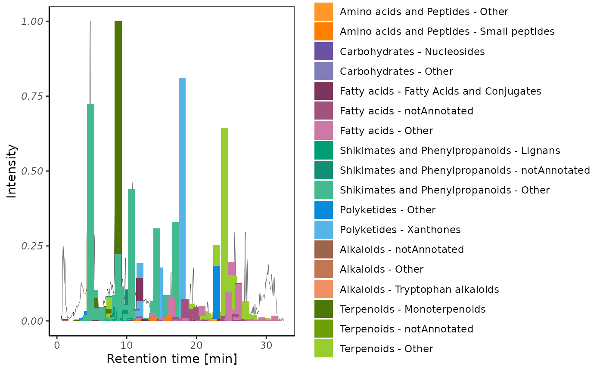

This vignette describes the main processing function. It assumes you already checked the previous basic steps.
Compare peaks to features
To do so, you will need:
- A previously generated mzmine features’ table
Then, you should be able to run
process_compare_peaks(show_example = TRUE)
#> loading MS data
#> Loading example MS file in memory, doing it on disk will be more efficient
#> loading chromatograms
#> loading name
#> loading feature table
#> preparing features
#> selecting 10 random features for the example
#> ... preparing features
#> ... keeping features above desired intensity only
#> setting joining keys
#> preprocessing chromatograms
#> preprocessing cad chromatograms
#> harmonizing names
#> improving chromatograms
#> baselining chromatograms
#> preprocessing peaks
#> preprocessing cad peaks
#> joining peaks
#> joining within given rt tolerance
#> selecting features outside peaks
#> splitting by file
#> splitting by peak
#> normalizing chromato
#> preparing peaks chromato
#> preparing rt
#> preparing mz
#> processing cad peaks
#> extracting ms chromatograms (longest step)
#> count approx 1 minute per worker per 100 features (increasing with features number)
#> varies a lot depending on features distribution
#> transforming ms chromatograms
#> extracting ms peaks
#> comparing peaks
#> selecting features with peaks
#> there are 13 features - peaks pairs
#> summarizing comparison scores
#> there are 13 scores calculated
#> joining
#> final aesthetics
#> checking export directory
#> exportingAnd this basically it! 🚀
If you know want to add some cosmetics, and you already have a TIMA annotation table, you can then run:
plots_list <- process_plot_pseudochromatograms(show_example = TRUE)The different plots offer the following views:
Confident unique annotations (minor)
plots_list$plots_1$histograms_unique_conf_min
Or getting rid of the chromatogram:
Treemap both
plots_list$treemaps$specialFor some other available helper functions, we now recommend you to read the next vignette.